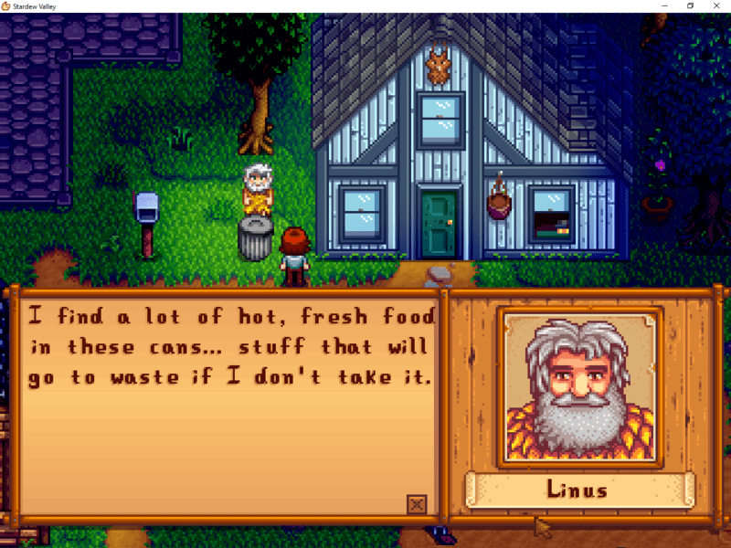
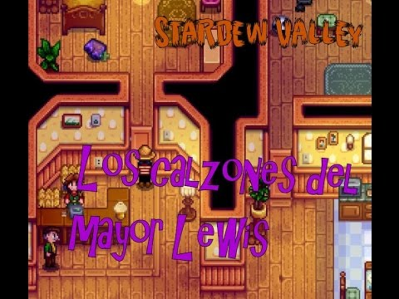
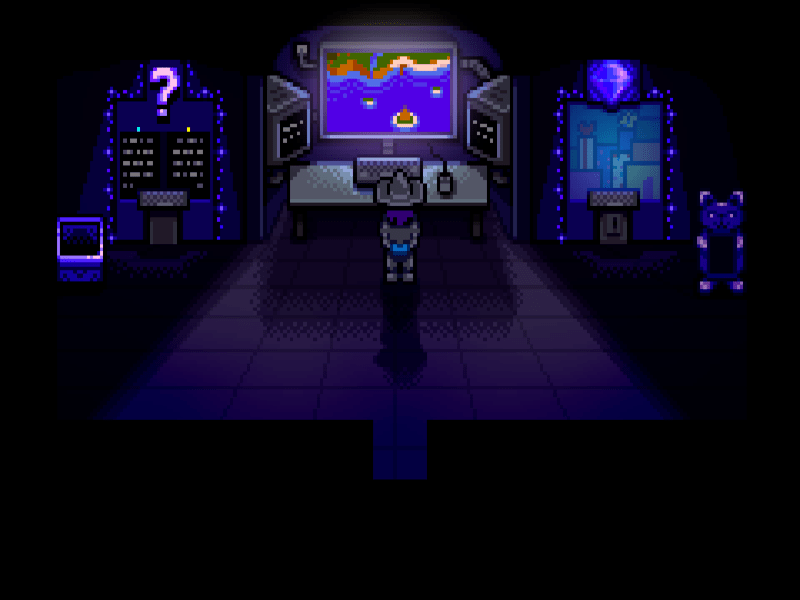
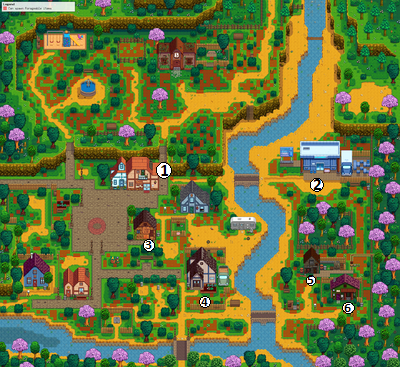

noticias
¡alerta! linus roba en la basura de los vecinos
Un vecino que volvia tarde a casa sorprendio en mitad de la noche a Linus rebuscando en la basura de otro vecino. Linus afirma ser pobre y que solo buscaba comida.
¿donde estan los calzoncillos del alcalde?
El alcalde Lewis le pide a un vecino de confianza que le ayude a buscar sus calzoncillos...lo que este no esperaba es que los calzoncillos se encontraban en la casa de Marnie, con la cual resulto tener relaciones intimas.
la guarida secreta del SR.QI
Todos los aldeanos se preguntan quien es el Sr.Qi. Hasta hora siempre ha sido una incognita su identidad...hasta que un vecino descubre que tiene una guarida secreta en la playa, desde la que vigila a todo el pueblo.
lista de los habitantes de stardew valley
- Alex
- Elliot
- Harvey
- Sam
- Sebastian
- Shane


- Abigail
- Emily
- Haley
- Leah
- Maru
- Penny


mapa

| punto de interes | |
|---|---|
| 1 | tienda de semillas |
| 2 | mercajoja |
| 3 | bar |
| 4 | casa del alcalde |
| 5 | herreria |
| 6 | museo |